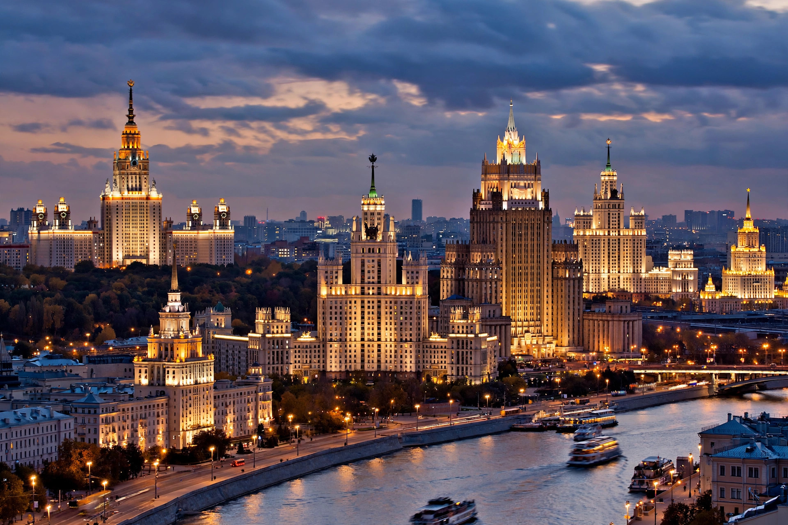

Stalinist architecture
| Stalinist architecture | |
|---|---|
| Active | c. 1933–1955 |
| Location | Soviet Union and Eastern Bloc |
| Also called | Stalinist Empire style; "wedding-cake" style |
Stalinist architecture, also called Stalinist Empire style or Socialist Classicism, is the architecture of the Soviet Union under Joseph Stalin between 1933 and 1955. It combined neoclassical monumentality with national traditions and socialist iconography, rejecting the modernism of the 1920s avant-garde.

1. Origins
2. Characteristics
3. Major works
4. Demise
Origins
The style crystallised after 1932, when all Soviet architects were folded into a single union and the competition for the Palace of the Soviets in Moscow signalled the turn to grand historical forms. Stalin demanded buildings that were "socialist in content, national in form".
Characteristics
Features include monumental scale, strict symmetry, rusticated stone facades, spires crowned with red stars, and sculptural programmes of workers, soldiers and harvests. The style was applied from ministry headquarters and hotels to metro stations and workers' housing.
Major works
The emblematic works are Moscow's "Seven Sisters" skyscrapers (vysotki), the Moscow Metro, the All-Russia Exhibition Centre, and — exported across the Eastern Bloc — the Palace of Culture and Science in Warsaw and Karl-Marx-Allee in Berlin.
Demise
After Stalin's death, Nikita Khrushchev's 1955 decree against architectural "excesses" brought the style to an abrupt end, ushering in mass-produced functionalist housing — the khrushchevka.
See also: Palace of Culture and Science · Socialist realism · Soviet Union